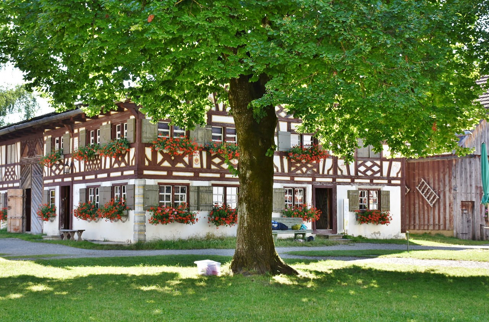
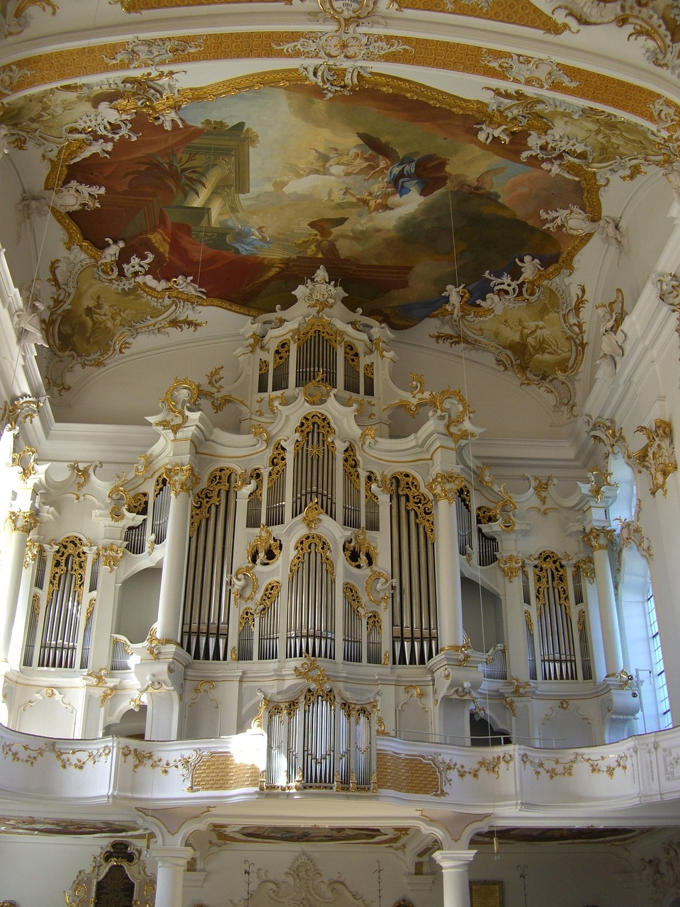

Places to see
My favorite places to see in Swabia

Monastery of Roggenburg
A beautiful church within a beautiful green landscape
Adress:
Klosterstraße 5, D - 89297 Roggenburg
What I like about it
One of the most beautiful and important rococo buildings in Swabia. The integrated education centre offers courses fo further education, advisory service, study groups, courses with overnight accommodation. The monstery in with hotel offers a mean burger.